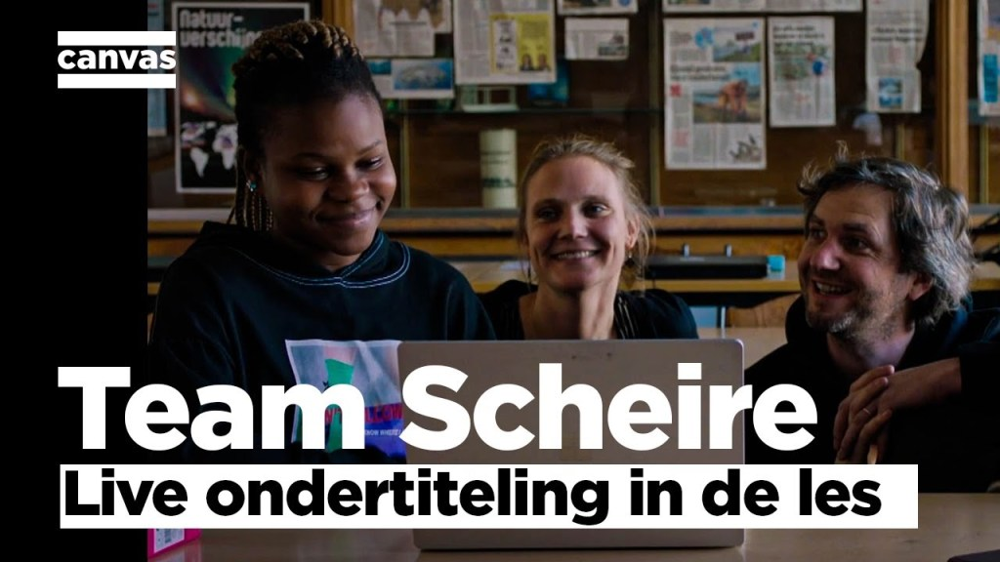

Building a Flemish Speech Recognition for good
In 2020, I’ve built a Flemish Speech Recognition Engine to create Flemish Voicebots. Flemish is the local variant of Dutch, spoken in Flanders, a region in Belgium with 6 million inhabitants.
6 months after that, we got a request from a Belgian TV show, Team Scheire, if we could help them build a solution to subtitle teachers to help non-native high school students who do not master Flemish. Together with a team of Microsoft Belgium, we’ve built an application which shows live transcriptions of the teacher during class, stores the results and lets the student browse them afterwards. For example, the student could look-up explanations or translations of difficult he/she did not master.
The Flemish Speech recognition engine was built by Chatlayer.ai, in which I took the lead. Back then we were still a product of another start-up Faktion. In short, we’ve altered our speech recognition engine to be able to deal with specific vocabulary used during a class of history or geography. This was crucial to make this a success because as with every speech recognition, they recognize general vocabulary but do not know any special words.
Watch the full episode online (Dutch):
https://www.vrt.be/vrtnu/a-z/team-scheire/2/team-scheire-s2a6/
